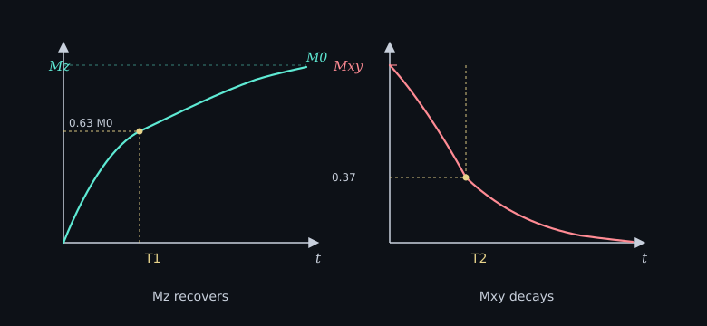

Continuing from the RF pulse: after a 90° pulse, M lies in the xy plane, but it does not remain there.
Two relaxation processes occur at the same time, each with its own time constant.
T1 describes how quickly Mz returns toward M0, its equilibrium value along B0. Starting from thermal equilibrium, an ideal 90° pulse gives Mz(0) = 0; the subsequent free recovery in the single-exponential model is:
Mz(t) = M0 (1 − exp(−t/T1))
This is called spin-lattice relaxation: the spins exchange energy with their surroundings. Fat generally has a shorter T1 than CSF, although the actual values depend on the tissue and measurement conditions. T1 is a time constant, commonly expressed in milliseconds or seconds.
T2 describes how quickly the xy component decays:
Mxy(t) = Mxy(0) exp(−t/T2)

Interactions and fluctuations in the local magnetic environment lead to loss of transverse coherence, even when the applied B0 is uniform. In many biological tissues, T2 is shorter than T1, but "T2 is always shorter than T1" is not a universal rule. Bloch, 1946, discussion of relaxation.
The time constants are not the times at which recovery or decay is complete. In the simple exponential model above, after one T1, Mz has recovered to about 63% of M0; after one T2, about 37% of the initial transverse magnetization remains. These percentages follow directly from 1 − exp(−1) and exp(−1).
An FID also contains dephasing caused by static field differences, including imperfect shimming and susceptibility variation, so its envelope is characterized by T2* rather than T2 alone. In a simple exponential description, 1/T2* = 1/T2 + 1/T2′, where T2′ accounts for this additional dephasing. An ideal spin echo can refocus static frequency offsets, but does not reverse intrinsic T2 decay. MIT: gradient and spin echoes, p. 2.
A T1-weighted image is not a T1 map. Weighting comes from sequence choices such as TR and TE, which make tissue differences contribute to image brightness; a T1 map instead estimates the time constant from measurements acquired under different conditions. A bright pixel does not directly tell us “this voxel’s T1.” The same distinction applies to T2-weighted images and T2 maps. MIT: MR principles.
中文
接續 RF pulse：90° pulse 之後，M 位於 xy 平面，但不會一直維持這個狀態。
接下來會同時發生兩個弛緩過程，各有自己的時間常數。
T1 描述的是 Mz 回到 M0 的速度，M0 是沿 B0 方向的平衡值；若從熱平衡開始，理想的 90° pulse 後 Mz(0) = 0，隨後的自由恢復在單一指數模型中可寫成：
Mz(t) = M0 (1 − exp(−t/T1))
這個過程稱為自旋晶格弛緩（spin-lattice relaxation），也就是 spin 與周圍環境交換能量；脂肪的 T1 通常比 CSF 短，但實際數值仍與組織及量測條件有關。T1 本身是時間常數，常用毫秒或秒表示。
T2 描述的則是 xy 分量衰減的速度：
Mxy(t) = Mxy(0) exp(−t/T2)
局部磁環境中的交互作用與波動，會讓橫向磁化逐漸失去相位一致性，即使外加的 B0 均勻也會發生；在許多生物組織中，T2 比 T1 短，但「T2 永遠比 T1 短」並不是普遍成立的規則。Bloch, 1946：弛緩的討論。
時間常數也不是恢復或衰減完成所需的時間。依上面的簡單指數模型，經過一個 T1，Mz 約恢復到 M0 的 63%；經過一個 T2，橫向磁化則還剩下初始值的約 37%，這兩個比例直接來自 1 − exp(−1) 與 exp(−1)。
自由感應衰減（FID）還會包含靜態磁場差異造成的散相，例如 shimming 不完全與磁化率差異，因此其包絡衰減以 T2* 描述，而不只由 T2 決定。在簡單指數模型中，可以寫成 1/T2* = 1/T2 + 1/T2′，其中 T2′ 描述額外散相；理想的 spin echo 可以重新聚合靜態頻率差造成的相位散開，但無法逆轉內在的 T2 衰減。MIT：Gradient and Spin Echoes，第 2 頁。
T1-weighted 影像與 T1 map 也要分開理解，前者透過 TR、TE 等序列設定，讓組織差異反映在影像亮暗上；後者則利用不同條件下的量測估計時間常數。因此，不能直接把亮的像素讀成「這個 voxel 的 T1」；T2-weighted 影像與 T2 map 也是相同的區分。MIT：磁共振基本原理。